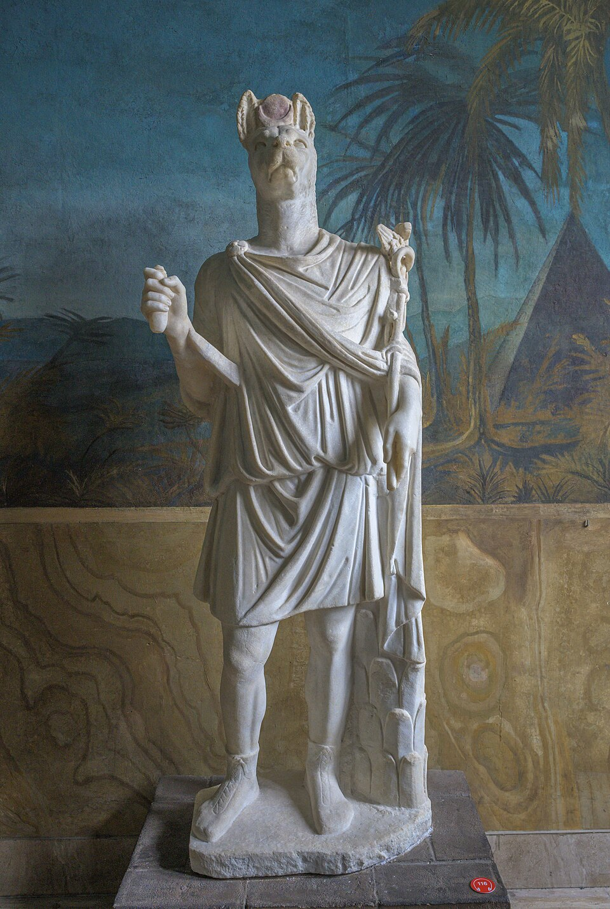

Происхождение и образ
Анубис (егип. Инпу) — один из древнейших богов Египта: ещё до того, как загробный мир «возглавил» Осирис, некрополи были его вотчиной под титулом «Хенти-Иментиу» — «Первый среди западных» (западом, где садится солнце, лежали кладбища). Позже Осирис перехватил этот титул, а Анубис стал его верным слугой и «настройщиком» суда — и всё же именно шакал остаётся лицом египетской смерти: его портрет узнаваем через три с половиной тысячелетия.
Логика образа выросла из наблюдения: золотистые шакалы рыскают по краю пустыни и выкапывают неглубокие могилы. Тот, кто «губит» мёртвых, становится их защитником — страх перед мародёром пустыни превратился в доверие к хранителю: Анубис «лежит на своей горе» над некрополем и никого к могилам не пускает. Его чёрный цвет — не траур: чёрный — цвет нильского ила (возрождение) и цвет смолы, которой пропитывают мумию («чёрный» = «омоложённый бальзамированием»).
Иконография
Анубис — шакал или человек с головой шакала, поджарый, с высокими стоячими ушами и длинным хвостом; часто — лежащий на «сундуке» (наборе для бальзамирования или на священных сандалиях жреца). Обязательные атрибуты: посох уас и имьут — странный «священный свёрток» на стойке, символ его культа («несущий имьут»). На погребальных стелах его изображают лежащим на мумии-ложе: жрецы в белых повязках совершают бальзамирование — как бы руками бога.
Знаменитейший образ — позолоченный шакал на позолоченном наосе над канопным сундуком из гробницы Тутанхамона: Анубис «стережёт» органы царя. В бальзамировочной палатке («шат-небет-маат» — палатка бальзамирования) стояла деревянная фигура «Анубиса в его палатке», накрытая льном, — настоящий надзиратель процесса: начальником палатки считался сам бог, а жрецы просто работали под его именем.
Функции: бальзамировщик, проводник, весовщик
Изобретение мумии. По мифу, после убийства Осириса именно Анубис (вместе с Исидой и Нефтидой) забальзамировал первое тело — и тем самым изобрёл ремесло, которым Египет занимался три тысячелетия. Жрецы-бальзамировщики надевали маски шакалов: обряд совершал сам бог.
Проводник. Анубис вводит умершего в зал суда — «он доносит о нём Западному» — и держит его за руку на пороге вечности; в Дуате его зовут «Тот, кто в Палате бальзамирования», «Владыка священной земли» (та-десрет — некрополь).
Весы. На весах суда Анубис склоняется над стрелкой: он следит, чтобы чаша сердца и перо Маат были равны, — физик божественного правосудия; Тот записывает результат. Амат сидит рядом — Анубис же не наказывает: его дело — истина и сохранность.
Культ: Цинополь и собачьи катакомбы
Главный город культа — Сау (греч. Цинополь, «город собак», совр. Эль-Кес), где содержали священных шакалов; в эпоху Птолемеев там и в Мемфисском Серапеуме работали «пастыри Анубиса» — жрецы, кормившие сакральных животных. В Саккаре находится Анубион — галереи-катакомбы с миллионами мумий собак и шакалов: подношение «Анубису живому» — пёс, завернутый как мумия. В 2018 году египетская миссия сообщала о находках в том же районе саркофагов с мумифицированными животными — вплоть до детёнышей льва.
В греко-римскую эпоху Анубис стал одним из самых «экспортных» египетских богов: его культ дошёл до Рима (Апулей в «Метаморфозах» описывает процессии «анубейцев» с масками шакалов), а Ювенал высмеивал римлян, «молящихся лающему богу».